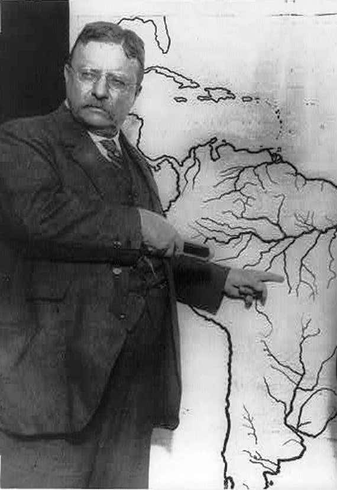
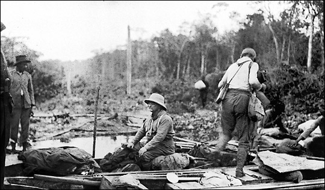
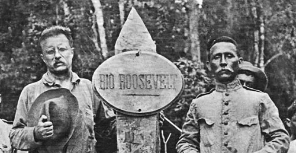

Only weeks after the end of his presidency, Roosevelt left on an expedition to East Africa to help the Smithsonian acquire specimens.
Roosevelt and his party killed or trapped 11,400 animals with the specimens being sent back to museums all across the country.
After the safari, the former president toured Europe to meet with leaders including, Franz Josef of Austria, Wilhelm II of Germany and King George V of Great Britain.
In 1913, Roosevelt and his son Kermit joined an expedition to explore the River of Doubt, part of the uncharted headwaters of the Amazon River in Brazil.
Roosevelt however became sick after injuring his leg. He contracted a fever and became delirious. Roosevelt told the party to leave him to die, but his son persuaded him against it.
Despite his declining health and losing over 50 pounds, Roosevelt's party charted the 625 miles of the river.
Today the River of Doubt is known as Rio Roosevelt in Brazil.
  